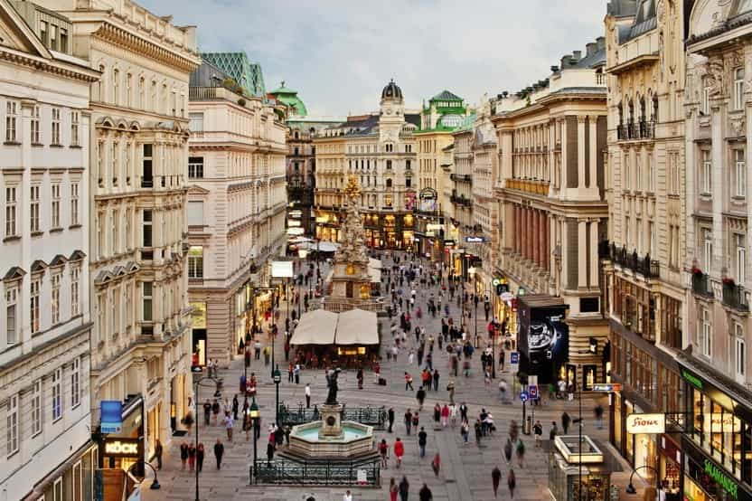

Kyle is an entrepreneur and nomad who has been living abroad since 2016. He blogs at This Is Trouble. Follow him on Facebook.


If a man has only two weeks of vacation a year, he might be hard-pressed to fit everything into a trip that he wants to achieve. Assuming your average single man in the West hopes to game some girls, see some culture, and not waste too much time in airport lines—a trip to Europe can be difficult.
After hopping around this continent for nearly the last two years, I’ve hit upon a group of cities that I think can offer men most of what they are looking for, without wasting the most precious resource he has—time.
I’ve picked three cities that are all close together (offering easy connections by train, bus, and even boat during the nice weather), have a mix of many parts that Europe has to offer, and are mostly safe from refugee invasion. These three cities are Vienna, Bratislava, and Budapest.

This is the cultural stop. Austrian women are called by the locals as “bland”, so it’s not exactly the ideal game situation. But, Vienna itself is a beautiful city with lots of interesting things to see and do. If you had 14 days in Europe, you could easily spend 2 or 3 in Vienna and not run out of sights to see.
Vienna definitely has it’s fair share of migrants who are attempting to rape and pillage the locals, but after spending time in both cities in 2016, I can safely say that it’s nowhere near as bad as Paris. It’s definitely not a cheap city, but considering the next two cities on the list, stretching the budget for a few days shouldn’t be an issue.
Lastly, if you happen to have a girl in Europe, or perhaps you meet one you click with in the other two cities, Vienna is definitely not a bad spot to bring a girl for a few days. Watch her eat a couple sausages, see some sights, and save your partying nights for one of the next two places.

Just an hour from Vienna by boat, bus, or train, and about 2-3 from Budapest, Bratislava will give you an off-the-grid experience into European culture. While the city center is quite nice, once you venture more than a kilometer outside of the center, you’re met with the rundown and Soviet style housing that is so prevalent throughout Eastern Europe.
And that’s one of the main reasons why I’d recommend Bratislava (even though I said so differently last year)—it will give you an insight into how different things can be in Europe, and it’s a stark contrast if you’re coming from either Vienna or Budapest. If you enjoy the run-down and beaten nature of Bratislava, there’s a good chance you’ll enjoy trekking further east to a place like Ukraine on your next trip.
The girls are pretty, and Bratislava overall is not slammed with silly British stag parties that flock to Prague, Poland, and Budapest.
It is worth noting that Slovakia uses the Euro, and not their own separate currency. But, they certainly don’t have the wealth that a country like Austria has. Despite this, the prices are relatively affordable (expect to pay about 5 Euros for a mid-level meal).
Finally, Bratislava is also a short hop away from Brno (1 hour) and Prague (4 hours) in the Czech Republic, should you fancy adding another country on to your list.
You can get to Budapest by Vienna via train in about 2 hours, or about 2-3 from Bratislava. There’s also bus connections if that’s more your cup of tea.
There was a stark contrast between my 2015 and 2017 trips to Budapest, so I’ll say this—get there while it’s still good, because it may not be for much longer. There are far more British and American expats, prices are rising (still quite cheap), and things never tend to improve once that happens.
With that being said, Budapest is a fun city to party in. You can get out every night of the week in the ruin pub district if you so wish. On weekends, the Hungarian clubs are great fun. There’s always festivals and events going on (the Red Bull Air Show is a goal of mine for next year).
The local Hungarian girls can definitely be harsh, but for a short trip, you’ll likely be able to pick up a non-local girl at any of the foreigner bars (get there early to avoid the super-sausage-fest that occurs after midnight).
Yes, there are definitely places in Europe that are more off-the-grid, have hotter women, or are more interesting to see than these three. They all have their pros and cons. However, I do believe that these three cities can provide a bit of everything for the single man who has limited time.
When you factor in an hour from the city center to an airport, an hour of waiting before the flight, plus flight and another trip to the center, it’s easy to spend 5-7 hours in transit for what amounts to a measly two hour flight. In Europe, it’s far better to take the train and spend that time enjoying the countryside and sipping a drink as opposed to fighting the airport madness.
These three cities offer easy connections and a taste of everything, and then you can plan the next trip based off of what you enjoy the most.
If you want to build a location independent business, check out Pro Niche Site—winter enrollment closes on November 1st.
Read More: 4 Tips For Long-Term Relationships With Foreign Girls